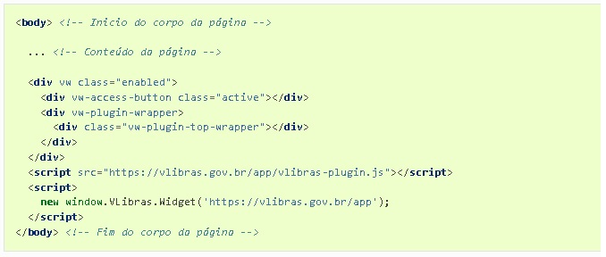
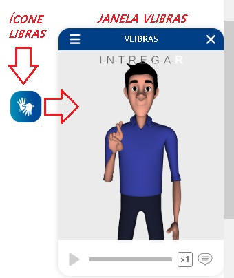

Aqui você aprenderá como integrar código de libras em sua página da Web.
Vamos lá? Siga as orientações abaixo.
-
Antes, devemos criar um arquivo html usando o VsCode (arvore DOM);
Bloco de códigos.
-
Logo em seguinda, em seu código html, dentro da área BODY (corpo da página), inserir o bloco de códigos
conforme orientação, abrindo e fechando a TAG da DIV correspondente ao bloco

- Após clicar no link, abrirá o site na aba com as orientações sobre a integração do vlibras
dentro de sua página html, fazendo a função de um tradutor de texto representando a imagem
com iteração conforme orientação abaixo: - A tradução com o VLibras Widget é feita pela seleção do texto que se deseja traduzir da página.
Para isso, o usuário deve iniciar a ferramenta clicando no ícone flutuante presente no lado direto do website.
Basta clicar no ícone flutante representando com um fundo azul e a imagem de duas mãos simulando movimento.
Após selecionado, abrirá no seu browser (navegador) a janela no canto inferior direito, o avatar traduzindo o texto.
Para a tradução, basta selecionar uma linha de texto que o tradutor em libras executará automaticamente. -
Feito isso, basta ir selecionando no seu browser, clicando em cima da linha aonde deseja que seja traduzido em libras
e a tradução será carregada automaticamente, representando todo o texto pelo qual foi feita a seleção.
-
IMPLEMENTAÇÕES: O vlibras bem como a forma de sua utilização, o Vlibras vem passando por transformações e estão sendo reestruturados para plugins, sendo disponibilizados publicamente para uso das aplicações
em códigos bem como APPs ou plugins fr navegodores, conforme suas novas roupagens e formas de uso, estão sendo disponibilizado Portal do
Software Público Brasileiro -0MINISTÉRIO DO PLANEJAMENTO, DESENVOLVIMENTO E GESTÃO, conforme disponbilizado abaixo:
- VLibras-Desktop - Windows Versão 5.1.0 . Acese o link: Download: Instalador-win-5.1.0.exe -
VLibras-Plugin - é um plugin de navegador que, quando habilitado, permite que o usuário traduza qualquer texto
selecionado no navegador para LIBRAS de forma automática. Com isso, o usuário surdo pode navegar em qualquer página na
Internet e acompanhar sua tradução em LIBRAS.
- VLibras Plugin - Chrome Versão 4.0.1. Acesse o link: Download: Plugin Google Chrome
- VLibras Plugin - Firefox Versão 4.0.1. Acesse o link: Download: Plugin Firefox
os códigos está disponíveis em repositórios públicos "Portal do Software Público Brasileiro. Acesse clicando no link a seguir do site: vlibras- Portal do Software Público Brasileiro.
Ou acessar o "VLibras - Suite VLibras" que é uma ferramenta responsável por traduzir automaticamente conteúdos digitais(texto, audio, video)em LIBRAS. Acesse clicando no link a seguir do site: SUITE-VLIBRAS.
Como é feita a Tradução de Texto?
